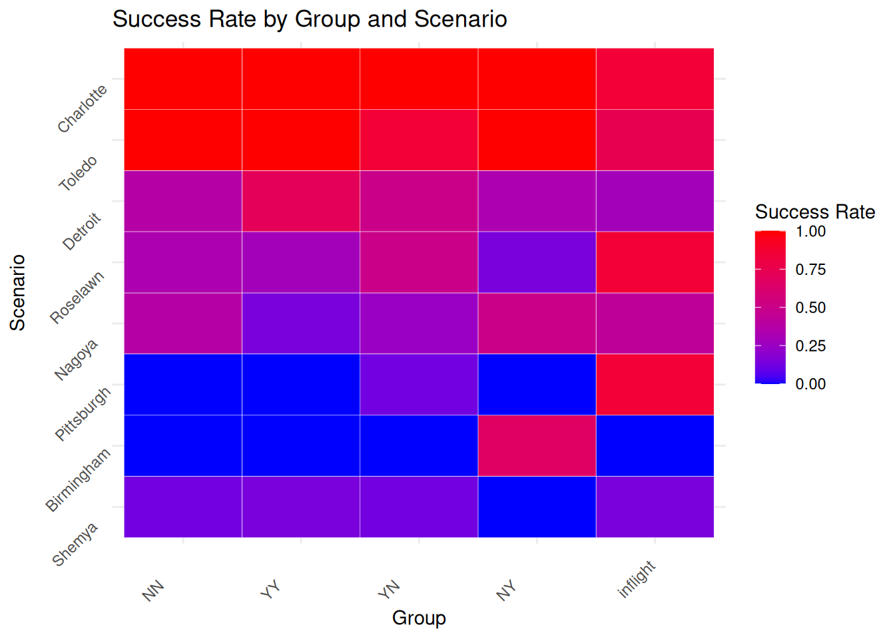
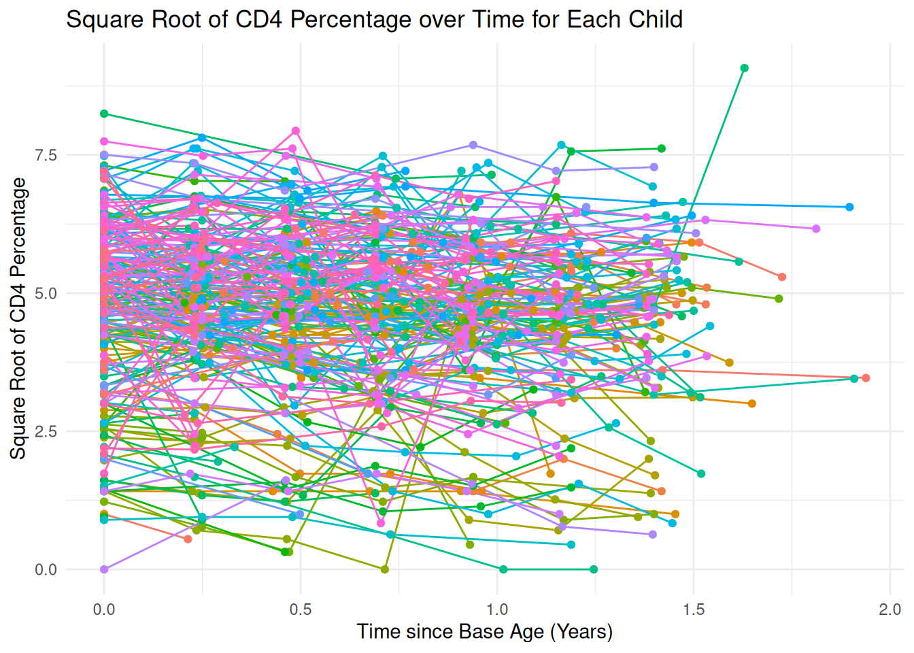
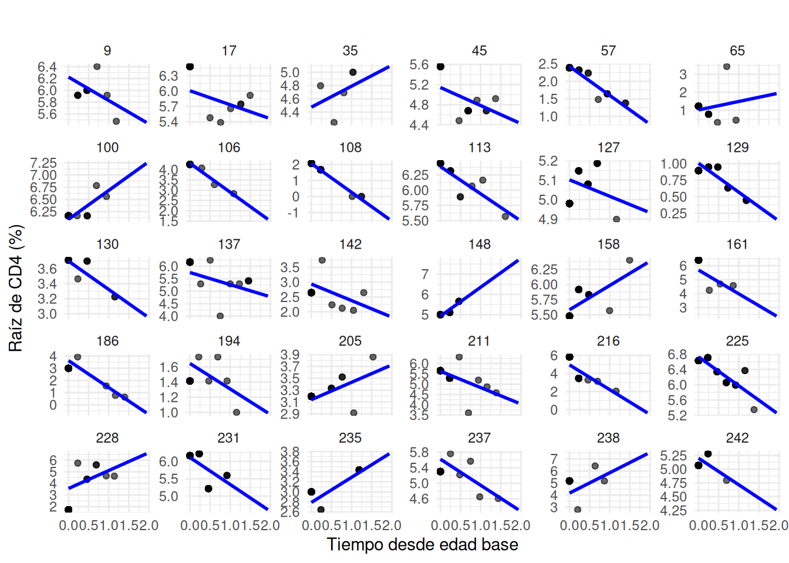

library(tidyverse)
library(arm)
library(readr) 3 Modelos Lineales Multinivel avanzados
3.1 Modelos multinivel no-anidados
3.1.1 Ejemplo 1: Pilotos
Carga de paquetes necesarios:
Carga de datos:
pilots <- read_delim('./data/ARM_Data/pilots/pilots.dat')
pilots <- pilots %>% mutate(group = as.factor(group),
scenario = as.factor(scenario),
recovered = ifelse(is.na(recovered),NA,as.numeric(recovered)))Depuración de datos:
result <- pilots %>%
group_by(group, scenario) %>%
summarize(
successes = sum(recovered == 1, na.rm = TRUE),
failures = sum(recovered == 0, na.rm = TRUE)
) %>%
ungroup() %>%
mutate(
y = successes / (successes + failures)
)
result <- result %>%
distinct(group, scenario, .keep_all = TRUE)Cambio a formato ancho y ordenamiento de datos:
y_mat <- result %>%
pivot_wider(names_from = group, values_from = y, values_fill = 0, id_cols = scenario) %>%
column_to_rownames("scenario")
sort_group <- order(apply(y_mat, 2, mean, na.rm = TRUE))
sort_scenario <- order(apply(y_mat, 1, mean, na.rm = TRUE))
y_mat_new <- y_mat[sort_scenario, sort_group]
result <- result %>%
mutate(
group_id_new = factor(group, levels = colnames(y_mat)[sort_group]),
scenario_id_new = factor(scenario, levels = rownames(y_mat)[sort_scenario])
)Heatmap de tasa de exito por grupo y escenario:
ggplot(result, aes(x = group_id_new, y = scenario_id_new, fill = y)) +
geom_tile(color = "white") +
scale_fill_gradient(low = "blue", high = "red", name = "Success Rate") +
labs(
title = "Success Rate by Group and Scenario",
x = "Group",
y = "Scenario"
) +
theme_minimal() +
theme(
axis.text.x = element_text(angle = 45, hjust = 1),
axis.text.y = element_text(angle = 45, vjust = 1)
)
Ajuste de modelo multinivel usando grupos y escenarios:
M1 <- lmer (y ~ 1 + (1 | group) + (1 | scenario),data = result)boundary (singular) fit: see help('isSingular')display (M1)lmer(formula = y ~ 1 + (1 | group) + (1 | scenario), data = result)
coef.est coef.se
0.44 0.12
Error terms:
Groups Name Std.Dev.
scenario (Intercept) 0.32
group (Intercept) 0.00
Residual 0.22
---
number of obs: 40, groups: scenario, 8; group, 5
AIC = 20.3, DIC = 7.3
deviance = 9.8 Ajuste con paquete nlme:
M1_nlme <- nlme::lme(y ~ 1, random = ~ 1 | group / scenario, data = result)
SS <- summary(M1_nlme)
SSLinear mixed-effects model fit by REML
Data: result
AIC BIC logLik
45.53959 52.19384 -18.76979
Random effects:
Formula: ~1 | group
(Intercept)
StdDev: 7.146626e-06
Formula: ~1 | scenario %in% group
(Intercept) Residual
StdDev: 0.3734507 0.001986792
Fixed effects: y ~ 1
Value Std.Error DF t-value p-value
(Intercept) 0.4418155 0.05904858 35 7.482237 0
Standardized Within-Group Residuals:
Min Q1 Med Q3 Max
-0.006293823 -0.004513152 -0.001248589 0.005916490 0.007951542
Number of Observations: 40
Number of Groups:
group scenario %in% group
5 40 3.1.2 Ejemplo 2: Ganancias vs altura
Carga de datos:
library(haven)
heights <- read_dta("data/ARM_Data/earnings/heights.dta")Depuracion de datos
heights <- heights %>%
mutate(
age = 90 - yearbn,
age = ifelse(age < 18, NA, age),
age_category = case_when(
age < 35 ~ 1,
age < 50 ~ 2,
TRUE ~ 3
),
eth = case_when(
race == 2 ~ 1,
hisp == 1 ~ 2,
race == 1 ~ 3,
TRUE ~ 4
),
male = 2 - sex
)
heights_clean <- heights %>%
filter(!is.na(earn) & !is.na(height) & !is.na(sex) & earn > 0 & yearbn > 25) %>%
dplyr::select(earn, height, sex, race, hisp, ed, age, age_category, eth, male)Algunas correcciones posteriores y variables adicionales:
heights_clean <- heights_clean %>%
mutate(height_jitter_add = runif(n(), -.2, .2))
heights_clean <- heights_clean %>%
mutate(
y = log(earn),
x = height
)
y <- heights_clean$y
x <- heights_clean$x
age <- heights_clean$age_category
n <- nrow(heights_clean)
n_age <- 3
n_eth <- 4Ajuste log-ingresos vs altura por etnia (Modelo anidado):
M1 <- lmer (y ~ x + (1 + x | eth),data = heights_clean)boundary (singular) fit: see help('isSingular')display (M1)lmer(formula = y ~ x + (1 + x | eth), data = heights_clean)
coef.est coef.se
(Intercept) 7.27 1.10
x 0.04 0.02
Error terms:
Groups Name Std.Dev. Corr
eth (Intercept) 1.55
x 0.02 -1.00
Residual 0.90
---
number of obs: 1062, groups: eth, 4
AIC = 2823.3, DIC = 2788.6
deviance = 2800.0 Ajuste del modelo mixto usando nlme con interceptos y pendientes aleatorios:
M1_nlme <- nlme::lme(
fixed = y ~ x,
random = ~ x | eth,
data = heights_clean
)
summary(M1_nlme)Linear mixed-effects model fit by REML
Data: heights_clean
AIC BIC logLik
2823.787 2853.583 -1405.893
Random effects:
Formula: ~x | eth
Structure: General positive-definite, Log-Cholesky parametrization
StdDev Corr
(Intercept) 1.77599145 (Intr)
x 0.02742268 -1
Residual 0.90300309
Fixed effects: y ~ x
Value Std.Error DF t-value p-value
(Intercept) 7.380834 1.2082771 1057 6.108560 0.0000
x 0.034270 0.0185317 1057 1.849284 0.0647
Correlation:
(Intr)
x -0.999
Standardized Within-Group Residuals:
Min Q1 Med Q3 Max
-4.9284272 -0.4286750 0.1752600 0.6456474 2.6066249
Number of Observations: 1062
Number of Groups: 4 Corrección para reducir correlación:
x.centered <- x - mean(x)
M2 <- lmer (y ~ x.centered + (1 + x.centered | eth),data = heights_clean)boundary (singular) fit: see help('isSingular')display (M2)lmer(formula = y ~ x.centered + (1 + x.centered | eth), data = heights_clean)
coef.est coef.se
(Intercept) 9.68 0.05
x.centered 0.03 0.02
Error terms:
Groups Name Std.Dev. Corr
eth (Intercept) 0.07
x.centered 0.03 1.00
Residual 0.90
---
number of obs: 1062, groups: eth, 4
AIC = 2823.3, DIC = 2788.6
deviance = 2800.0 Ajuste de un modelo mixto con nlme (comentado porque da error):
#M2_nlme <- nlme::lme(
# fixed = y ~ x.centered,
# random = ~ x.centered | eth,
# data = heights_clean
#)Inclusión de la categoría de edad:
M3 <- lmer (y ~ x.centered + (1 + x.centered | eth) + (1 + x.centered | age) +
(1 + x.centered | eth:age),data = heights_clean)boundary (singular) fit: see help('isSingular')display (M3)lmer(formula = y ~ x.centered + (1 + x.centered | eth) + (1 +
x.centered | age) + (1 + x.centered | eth:age), data = heights_clean)
coef.est coef.se
(Intercept) 9.69 0.07
x.centered 0.05 0.02
Error terms:
Groups Name Std.Dev. Corr
eth:age (Intercept) 0.00
x.centered 0.00 -0.90
age (Intercept) 0.42
x.centered 0.02 0.76
eth (Intercept) 0.04
x.centered 0.02 1.00
Residual 0.81
---
number of obs: 1059, groups: eth:age, 136; age, 47; eth, 4
AIC = 2697.1, DIC = 2652.6
deviance = 2662.9 Ajuste del modelo con nlme (con error):
#M3_nlme <- nlme::lme(
# fixed = y ~ x.centered,
# random = ~ x.centered | eth + age + eth:age,
# data = heights_clean
#)Modelo reducido sin interacción (también da error):
#M4_nlme <- nlme::lme(
# fixed = y ~ x,
# random = ~ x | eth + age + eth:age,
# data = heights_clean
#)3.1.3 Tarea 1
Carga de datos
library(ggplot2)
library(readr)
cd4_data <- read_csv("data/ARM_Data/cd4/allvar.csv")Depuración de datos:
cd4_data$VDATE <- as.Date(cd4_data$VDATE, format="%m/%d/%Y")
cd4_data_filtered <- na.omit(cd4_data[, c("newpid", "visage", "CD4PCT", "baseage", "treatmnt")])
cd4_data_filtered$time_since_baseage <- cd4_data_filtered$visage - cd4_data_filtered$baseage
cd4_data_filtered$sqrt_CD4PCT <- sqrt(cd4_data_filtered$CD4PCT)Gráfico del porcentaje transformado de CD4 como función del tiempo:
ggplot(cd4_data_filtered, aes(x=time_since_baseage, y=sqrt_CD4PCT, group=newpid, color=factor(newpid))) +
geom_line() +
geom_point() +
labs(x = "Time since Base Age (Years)", y = "Square Root of CD4 Percentage",
title = "Square Root of CD4 Percentage over Time for Each Child") +
theme_minimal() +
theme(legend.position = "none")
Ajuste de un modelo lineal para cada niño, usando solamente aquellos niños con más de dos visitas:
cd4_data_filtered <- cd4_data_filtered %>%
group_by(newpid) %>%
filter(n() > 2) %>%
ungroup()
linear_models <- cd4_data_filtered %>%
group_by(newpid) %>%
do(model = lm(sqrt_CD4PCT ~ time_since_baseage, data = .))
cd4_fits <- linear_models %>%
rowwise() %>%
do(data.frame(newpid = .$newpid, time_since_baseage = cd4_data_filtered$time_since_baseage,
pred = predict(.$model, newdata = cd4_data_filtered)))
cd4_fits <- left_join(cd4_fits, cd4_data_filtered, by = c("newpid", "time_since_baseage"))Gráfico de los ajustes lineales para una muestra de 30 niños:
set.seed(123)
sampled_children <- cd4_data_filtered %>%
distinct(newpid) %>%
sample_n(30) %>%
pull(newpid)
cd4_data_sampled <- cd4_fits %>%
filter(newpid %in% sampled_children)
ggplot(cd4_data_sampled, aes(x=time_since_baseage, y=sqrt_CD4PCT)) +
geom_point(aes(y=sqrt_CD4PCT), alpha=0.6) + # Original data points
geom_line(aes(y=pred), size=1, color="blue") + # Linear fits
facet_wrap(~newpid, scales = "free_y") + # Facet by patient ID
labs(x = "Tiempo desde edad base", y = "Raíz de CD4 (%)",
title = "") +
theme_minimal()
Ajuste de un modelo con interceptos y pendientes como función de el tratamiento y la edad base, a través de un procedimiento de dos pasos. Paso 1:
child_models <- cd4_data_filtered %>%
group_by(newpid) %>%
summarize(
intercept = coef(lm(sqrt(CD4PCT) ~ time_since_baseage))[1], # Intercept
slope = coef(lm(sqrt(CD4PCT) ~ time_since_baseage))[2] # Slope
)Merge de los datos de los modelos con los datos originales:
child_models <- child_models %>%
left_join(cd4_data_filtered %>% distinct(newpid, treatmnt, baseage), by = "newpid")Paso 2:
intercept_model <- lm(intercept ~ treatmnt + baseage, data = child_models)
slope_model <- lm(slope ~ treatmnt + baseage, data = child_models)
summary(intercept_model)
Call:
lm(formula = intercept ~ treatmnt + baseage, data = child_models)
Residuals:
Min 1Q Median 3Q Max
-3.9042 -0.6859 0.1141 1.0212 2.7661
Coefficients:
Estimate Std. Error t value Pr(>|t|)
(Intercept) 4.76860 0.35152 13.57 <2e-16 ***
treatmnt 0.37018 0.20007 1.85 0.0659 .
baseage -0.11327 0.04442 -2.55 0.0116 *
---
Signif. codes: 0 '***' 0.001 '**' 0.01 '*' 0.05 '.' 0.1 ' ' 1
Residual standard error: 1.362 on 184 degrees of freedom
Multiple R-squared: 0.0532, Adjusted R-squared: 0.0429
F-statistic: 5.169 on 2 and 184 DF, p-value: 0.006546summary(slope_model)
Call:
lm(formula = slope ~ treatmnt + baseage, data = child_models)
Residuals:
Min 1Q Median 3Q Max
-4.9019 -0.4392 0.0026 0.4896 6.0402
Coefficients:
Estimate Std. Error t value Pr(>|t|)
(Intercept) -0.40791 0.29048 -1.404 0.162
treatmnt 0.06036 0.16533 0.365 0.715
baseage 0.00881 0.03671 0.240 0.811
Residual standard error: 1.126 on 184 degrees of freedom
Multiple R-squared: 0.0009983, Adjusted R-squared: -0.00986
F-statistic: 0.09193 on 2 and 184 DF, p-value: 0.9122Ajuste de un modelo mixto con intercepto aleatorio por niño:
cd4_model <- lmer(sqrt_CD4PCT ~ time_since_baseage + (1 | newpid), data = cd4_data_filtered)
summary(cd4_model)Linear mixed model fit by REML ['lmerMod']
Formula: sqrt_CD4PCT ~ time_since_baseage + (1 | newpid)
Data: cd4_data_filtered
REML criterion at convergence: 2762.4
Scaled residuals:
Min 1Q Median 3Q Max
-4.7884 -0.4721 0.0026 0.4547 5.0256
Random effects:
Groups Name Variance Std.Dev.
newpid (Intercept) 1.7498 1.3228
Residual 0.5865 0.7658
Number of obs: 972, groups: newpid, 187
Fixed effects:
Estimate Std. Error t value
(Intercept) 4.93400 0.10534 46.839
time_since_baseage -0.38491 0.05439 -7.077
Correlation of Fixed Effects:
(Intr)
tim_snc_bsg -0.313Ajuste del modelo extendido con covariables por niño:
cd4_model_extended <- lmer(sqrt_CD4PCT ~ time_since_baseage + treatmnt + baseage +
(1 | newpid), data = cd4_data_filtered)
summary(cd4_model_extended)Linear mixed model fit by REML ['lmerMod']
Formula: sqrt_CD4PCT ~ time_since_baseage + treatmnt + baseage + (1 |
newpid)
Data: cd4_data_filtered
REML criterion at convergence: 2757.9
Scaled residuals:
Min 1Q Median 3Q Max
-4.8101 -0.4699 0.0084 0.4432 5.0437
Random effects:
Groups Name Variance Std.Dev.
newpid (Intercept) 1.6680 1.2915
Residual 0.5864 0.7658
Number of obs: 972, groups: newpid, 187
Fixed effects:
Estimate Std. Error t value
(Intercept) 4.66797 0.34667 13.465
time_since_baseage -0.38378 0.05438 -7.058
treatmnt 0.42721 0.19649 2.174
baseage -0.10143 0.04361 -2.326
Correlation of Fixed Effects:
(Intr) tm_sn_ trtmnt
tim_snc_bsg -0.090
treatmnt -0.846 -0.001
baseage -0.478 -0.009 0.042Extrae la edad del niño en la última visita:
last_time <- cd4_data_filtered %>%
group_by(newpid) %>%
summarize(last_visage = max(visage), baseage = first(baseage), treatmnt = first(treatmnt))Calcula la edad en la siguiente visita, asumiendo que esta se realiza un año después de la última visita:
next_time_data <- last_time %>%
mutate(
next_visage = last_visage + 1, # Hypothetical next time point: 1 year later
time_since_baseage = next_visage - baseage # Recalculate time since base age
)Predicción del CD4 un año después, usando predict (sin simular)
next_time_data$sqrt_predicted_CD4PCT <- predict(cd4_model_extended, newdata = next_time_data, re.form = ~(1 | newpid))
next_time_data$predicted_CD4PCT <- (next_time_data$sqrt_predicted_CD4PCT)^2Predicción de CD4 para un niño nuevo de 4 años, en incrementos de 1 año hasta los 10 años:
new_child_data <- data.frame(
newpid = "new_child", # Placeholder for new child ID
baseage = 4, # Baseline age is 4 years
next_visage = seq(4, 10, by = 1), # Time points: 4, 5, 6, ..., 10 years
treatmnt = 1 # Assume the child is receiving treatment (can change to 0 if no treatment)
)
new_child_data$time_since_baseage = new_child_data$next_visage - new_child_data$baseage
new_child_data$sqrt_predicted_CD4PCT <- predict(cd4_model_extended, newdata = new_child_data, re.form = NA)
new_child_data$predicted_CD4PCT <- (new_child_data$sqrt_predicted_CD4PCT)^2
new_child_data %>% dplyr::select(next_visage, predicted_CD4PCT) next_visage predicted_CD4PCT
1 4 21.991143
2 5 18.538967
3 6 15.381368
4 7 12.518345
5 8 9.949898
6 9 7.676027
7 10 5.696733